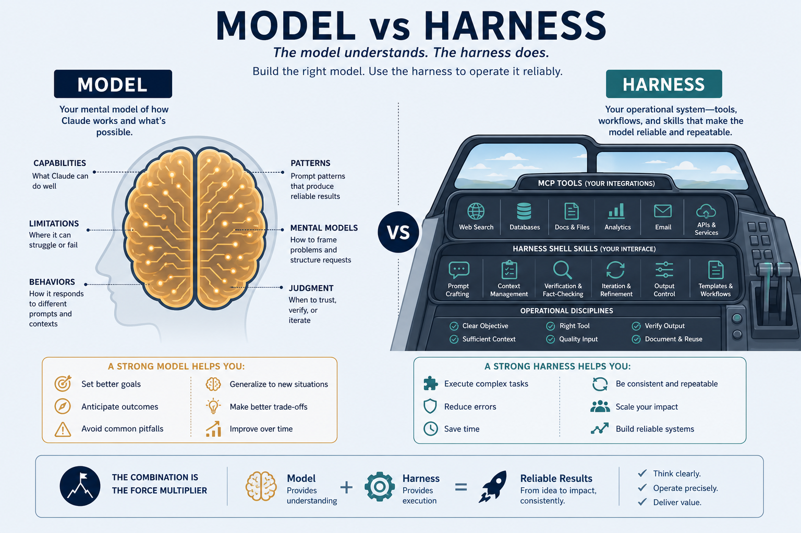

AI Agents · harness comparison
Harness ≠ model. Same brain, different kitchens — tools, mise en place, and service rhythm change the meal.
Picking a model is only half the story
What it sees
The harness decides which files and history enter the prompt.
What it can call
MCP, shell, browser — smoothness and reliability vary wildly.
How it finishes
Self-correction, tests, asking back — agent-loop design is a harness feature.
Same model in Cursor vs Claude Code can feel opposite — because the harness differs.
Key ideas
Harness = orchestration
UI, tool calling, context management, agent loop. Not the weights.
Model = the brain
Plugged into the harness. Compare models in model-notes — compare kitchens here.
Skills / rules / MCP feel uneven across clients because loading ~/.agents, MCP reliability, and loops are harness features.
Harness comparison grid

Personal field map — strengths, limits, and feel across everyday coding harnesses.
Model vs harness

Same brain, different arms: tools, context, and loop live in the harness — not in the weights.
Agent loop fed by skills

Plan → act → observe → retry, fueled by AGENTS.md and ~/.agents skills. One-shot “here’s a patch” is a thin loop.
Harness comparison
| Harness | Strengths | Limitations | Feel |
|---|---|---|---|
| Cursor | fast feedback; Auto vs fixed; MCP + strong skills | Auto quality can be unpredictable | fastest loop; grok-4.5 cheap + strong |
| Claude Code | clarifies context; complex skills/rules | slower; session limits | solid for hard / constrained work |
| Pi | loads global ~/.agents; lightweight | smaller ecosystem | same skills, minimal overhead |
| Cline / Kilo | open, customizable | quality depends on plugged-in model | rapid self-directed testing |
| OpenCode | OSS, many models | fewer “smart” features | test via OpenRouter |
| Zed | fast editor, compact agent | agent less deep | lightweight coding |
Harness axes · what actually differs
| Axis | What it controls | Failure mode when weak |
|---|---|---|
| Context | files/snippets; compression; @-mentions | forgets repo facts / hallucinates APIs |
| Tool calling | MCP, shell, browser, apply-patch reliability | suggests commands you must paste |
| Agent loop | plan → act → observe → retry; tests; ask-back | one-shot answers; no self-correction |
| Skills / rules | loading ~/.agents, project rules, AGENTS.md | re-teaches conventions every session |
| Model routing | Auto vs fixed; per-subagent models | quality swings mid-task without notice |
| Permissions | write, network, secrets sandbox | blocked forever — or dangerously free |
Auto vs fixed model
Cursor Auto
Fast feedback — quality varies with routing. Use for trivial edits. Convenience can hide regressions.
Fixed (e.g. grok-4.5)
Controllable. In practice often better than Auto without burning much budget. Pin for long / reproducible tasks.
Treat Auto as a mode, not a model. Log which brain ran on long refactors.
Same bug, different arms
MCP + skills
Run tests → read log → patch → re-run. You review.
Hard multi-file
Slower; stronger ask-back (“flake or deterministic?”) before editing.
Weak shell/MCP
Same brain only describes pytest. You paste forever.
Before swapping models, check whether the harness can execute, observe, and iterate.
Deeper dive · diagnose harness first
Scarce budget
Aggressive summarize/drop makes even Opus look lost. Pin @file for schemas / AGENTS.md.
Reliability > count
One solid shell + apply-patch beats ten flaky MCPs. Ping list_tools before blaming the model.
Loop depth
Re-run-after-test, browser verify, ask-back on ambiguity = thick. One-shot patch = thin.
Skills as fuel
Only help if the client loads ~/.agents. Duplicate skill trees across clients cause drift.
Routing transparency
Silent Auto switches break reproducibility. Pin + note model in the PR.
Security axis
Auto-approve network/secrets feels fast until it leaks. Explicit approvals for prod credentials.
Decision guide
| Situation | Prefer | Avoid / why |
|---|---|---|
| Tight UI / edit loop, see diffs instantly | Cursor + fixed strong cheap model (e.g. Grok 4.5) | Thin chat-only harness — paste commands forever |
| Hard multi-constraint refactor, dense skills | Claude Code | Comparing it to Cursor on a 30s CSS tweak |
| Same skills across clients, minimal UI | Pi loading ~/.agents | Copying skill trees into each vendor folder |
| Testing many OpenRouter models quickly | OpenCode / Cline-style open harness | Judging models inside a broken tool setup |
| “Model is dumb” but shell/MCP denied | Fix permissions / MCP health | Immediately swapping to a bigger model |
| Reproducible long task | Pin model + AGENTS.md + skills | Auto routing with no log of which model ran |
Case Study
Same bug report — “CI tests fail” — across three harness thicknesses.
Inputs
failing CI log, local repo, MCP/shell permissions, project skills + AGENTS.md.
Steps
Thick (Cursor): run tests → read log → patch → re-run → summarize. Claude Code: slower, stronger ask-back on flake vs deterministic failure before editing. Thin chat: model only describes pytest -q; you paste everything.
Output
thick harnesses produce a verified fix; thin harnesses produce advice. Model card unchanged.
Verify
shell/MCP not denied; skills actually loaded; Auto vs pinned model logged; don’t swap to a bigger model until the harness can execute and observe.
Lab Checklist
Pick two harnesses and run the same small repo task on both
Deny shell once on purpose; note how the session degrades to chatbot mode
Pin a model vs Auto on a multi-step task; record which felt more stable
Confirm ~/.agents or project skills are visible to the client you use
Add or update AGENTS.md with one non-negotiable project convention
Trace one agent loop: plan → tool call → observe → retry
Debug one MCP server with a tiny ping/list_tools before blaming the model
Write which harness axis failed last time you “blamed the model”
Easy to go wrong
Blame the model
Missing tools ≠ weak reasoning. Check the harness first.
Always Auto
Convenience hides routing regressions.
Skip AGENTS.md / skills
Every session re-teaches the same project facts.
Ignore permissions
Denying shell/MCP turns a capable harness into a chatbot.
First mate · homes · try MCP
First mate
Orchestrates crew + agents.md — multi-agent only helps if tools + shared FS work.
~/.agents/skills
Global skills home — shared across Cursor / Claude / Pi.
MCP demo
Host ↔ server ↔ tools — feel harness tool calling in practice.
How a job gets done
Pair with model-notes (engines) · mcp.md · skills-rules. Complexity-router demo for routing intuition.
Choose the kitchen,
then the chef.
notes/07-agents.md — axes, Auto vs fixed, decision guide.
Open note →